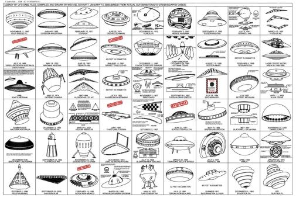

Common sense standards of objectivity should not be applied to UFOs/Bigfoot

(illustration ref.: nice chart of some ufo sightings : UFOs - https://www.reddit.com/r/UFOs/comments/8e5qt0/nice_chart_of_some_ufo_sightings/ )
Common sense standards of objectivity cannot be applied to UFOs/Bigfoot
- Even if a UFO/Bigfoot is witnessed by several credible people at the same time and in the same place, and even if all of their testimonies are sincere, it does not mean that the UFO/Bigfoot is an objective reality as it is. The reason is that the following cases have been reported. - Some people can see the UFO/Bigfoot at a short distance, while others cannot, even if several people observe the same place and in the same direction at the same time. In many cases, even when multiple people see the same object, what each person sees is completely different from what the other person sees. - In many cases, UFOs and Bigfoots that are clearly visible to the naked eye do not show up on camera images at all, or are nothing more than badly blurred spots. - There are many eyewitness accounts of UFOs transforming into helicopters, airplanes, orbs, etc. On the other hand, there are many cases of orbs turning into UFOs. On the contrary, there are many testimonies of orb, etc. transformed into UFOs. Similarly, there are many testimonies that Bigfoot transformed into orb. - There have been many reports of sightings related to UFOs and Bigfoot that have shaken such common-sense standards of objectivity. This indicates that the sightings of UFOs and Bigfoot seen by witnesses may not be objective reality. - In other words, the appearance of the UFO/Bigfoot could be (1) A deception projected onto the subjectivity of the witnesses (= deception theory) (2) Reflection of subjective perception (=hallucination theory) - Thus, the possibility of deception or subjective reflection cannot be ruled out as a real problem in the case of UFO/Bigfoot phases. In this case, even if several people clearly witnessed the exact same sighting or appearance of a UFO/Bigfoot, it does not mean that the UFO/Bigfoot is real. - In other words, the common sense standard of objectivity (i.e., unanimous eyewitness testimony of multiple credible persons) does not apply to UFOs/Bigfoots.Perspective needs to change
- If common sense standards of objectivity do not apply to UFOs/Bigfoot, then we need to change our perspective. - In other words, taking issue with A below will not yield useful results. If it is a reflection of subjectivity, it is natural that it looks different. (A) Why do UFOs/Bigfoots sometimes appear differently to different people? - The following B should be the issue. (B) Why do multiple people sometimes see UFOs/Bigfoots similar to each other when they did not report them to each other? - My answer to this B question at this point is the "resonant cognition" hypothesis.By the way...
- Note that Jacques Vallee and John Keel are of the deception theory. They did not seem to have taken issue with B, but rather they thought that the answer to A above was as follows. An unknown intelligence intervenes in our perception and tricks us into seeing various appearances such as fairies, angels, Jinn, Bigfoot, ETs, UFOs, etc. - I do not believe that "unknown intelligences" intervene(*1). Hence, I do not subscribe to the deception theory.(*1)
- The reasons I have determined that there is no intervention of an "unknown intelligent body" are as follows. If an "unknown intelligence" were involved, the UFO/Bigfoot phenomenon would be much more sophisticated in its modus operandi and would be a highly sophisticated deception. In fact, there is no sign of sophistication, and no sign of advanced deception. In fact, there is no hint of sophistication, no sign of advanced deception, but rather intellectual flaws and confusion rather than sophistication. It is confusing and therefore complex and bizarre. All the supposed messages from ET are so mediocre that they do not show any high level of intelligence at all. There is a great deal of obvious gibberish in these messages. There is not even a hint of advanced deception in these messages. - In other words, if it is the work of an "unknown intelligence," that intelligence is significantly less intelligent than normal humans. Ethical, religious, spiritual, physical and mathematical intelligence...all of these aspects are vastly inferior to normal humans. This is immediately obvious when profiling them, but for some reason we never hear of any cases where it has been tried. - Therefore, it is not unreasonable to assume that this is not the work of an advanced "unknown intelligence," but rather a hallucination caused by a disturbance in consciousness. If it is a hallucination caused by a disturbance in consciousness, it is understandable that they are inferior to normal human beings in terms of intelligence and mentality and are confused. (2022-04-28)
The article on which the translation is based
UFO/Bigfoot に常識的な客観性の基準を適用すべきではない (2022-04-28)Thanks
- Translated with www.DeepL.com/Translator (free version) (2022-05-02 translation)